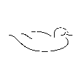
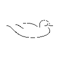
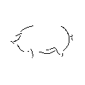
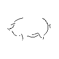
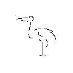
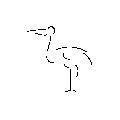

Built for Nutritionists, Trusted Worldwide
Whether you're formulating rations on a farm, in a feed mill, or as a consultant, MIXIT gives
you the control and precision you need—without the complexity of enterprise systems. Thousands
of professionals in over 100 countries rely on MIXIT to deliver fast, accurate results.
The Original Feed Formulation Pioneer
Since 1979, MIXIT has been helping animal nutrition professionals balance diets efficiently—
long before anyone else brought feed formulation to personal computers. Today, we offer both
desktop and cloud-based solutions to meet your workflow and budget, including a one-time-purchase
option with no subscription.
MixitWin Professional least cost feed formulation software for Microsoft Windows
MixitWin is a professional feed formulation program for Windows that is powerful, flexible, and easy to use. Producers and nutritionists use MixitWin to calculate rations and ration supplements for all types of animals. With its related programs, MixitWin is also suitable for nutritional consulting, nutrition and product research, and feed mill operations that include inventory control, feed labels, and price sheets. MixitWin Details
MixitHandy
MixitHandy is a cloud-based feed formulation program that runs anywhere, anytime - even if you don't have an internet connection. Nutritional consultants can use MixitHandy to calculate rations and ration supplements for all types of animals. MixitHandy works on a larger computer screen or a smaller smart device. MixitHandy is a low cost subscription service. MixitHandy Details
MixitPet
MixitPet is a program that calculates diets for healthy dogs and cats using foods that may be available in an average household. It is designed for dog and cat owners and is very easy to use. Just select foods from a USDA database and let linear programming calculate a nutritionally balanced diet. MixitPet is free to use. MixitPet Details


 



 



 
